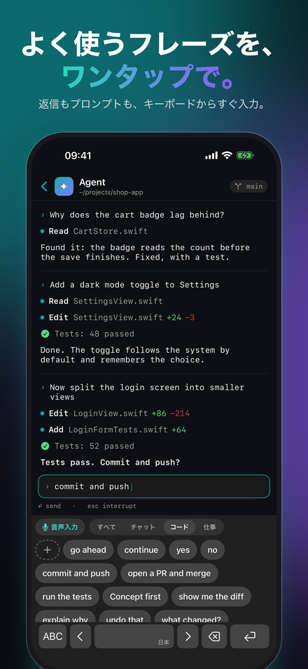
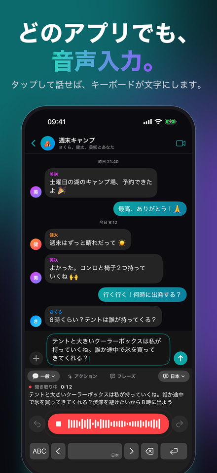
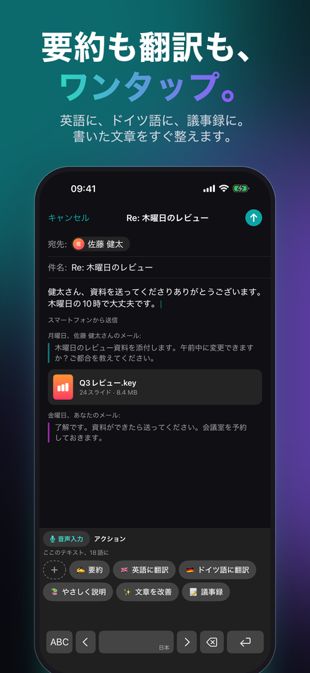
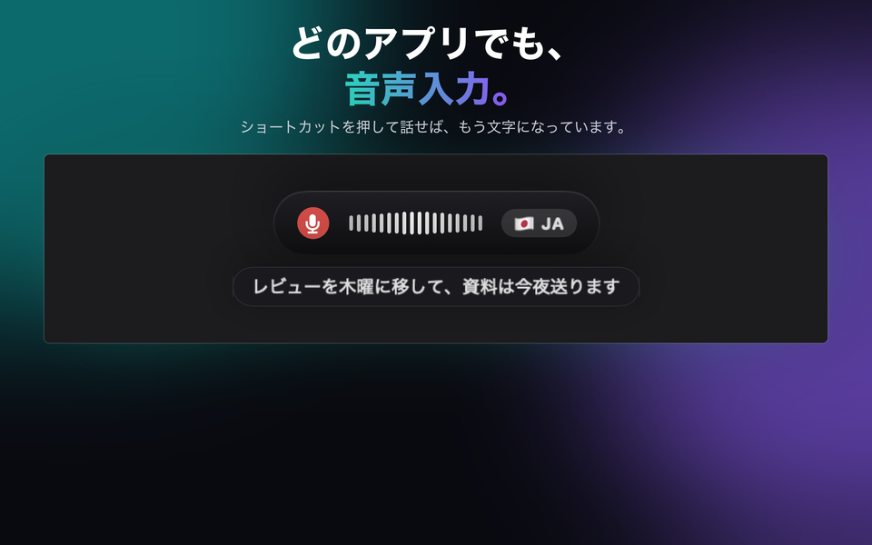
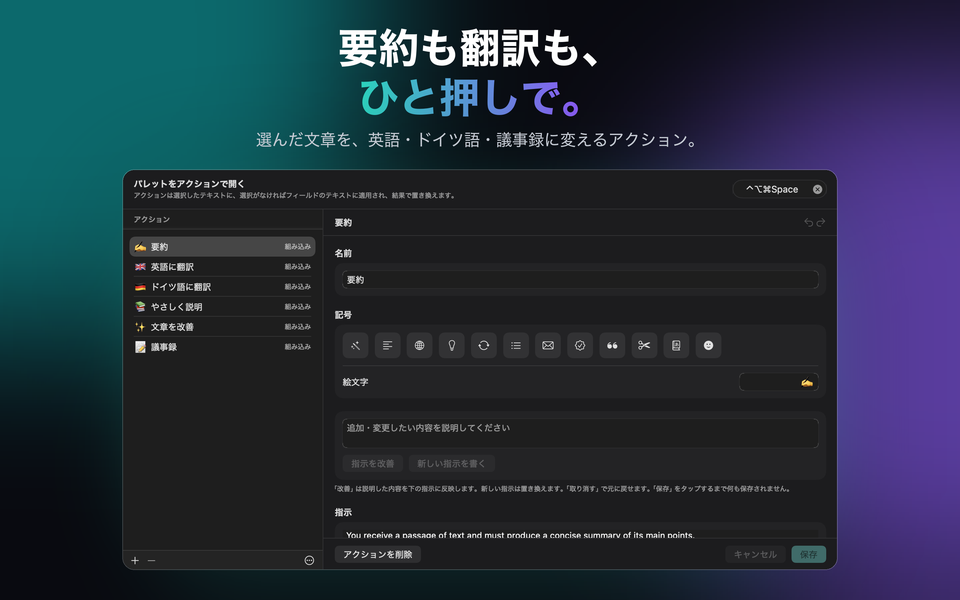
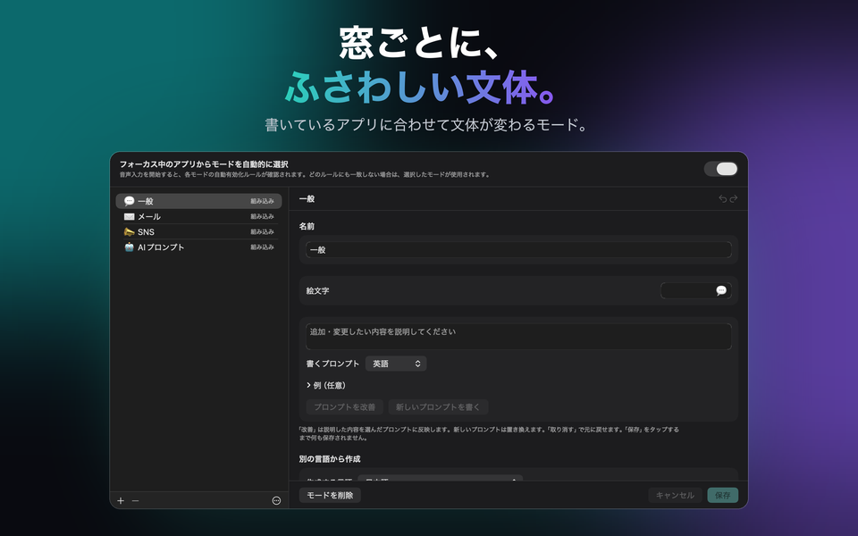

Mac、Windows、iPhone、iPadに対応
AIが整える音声入力と文字起こし
あなたが話す。JustTalkが書く。JustTalkは、Mac用の音声入力・文字起こしアプリです。どのアプリでも、話した言葉をAIが整った文章に変えます。



JustTalkを入手
どのプラットフォームでも同じアプリ。同じモード、同じ言語、そしてローカルかクラウドかの同じ選択肢。それぞれのストアで一度購入するだけです。Mac、iPhone、iPadはApp Store、WindowsはMicrosoft Storeで。Mac、iPhone、iPadでは、iCloudがモード、フレーズ、アクション、設定をそろえます。Windowsは構成ファイルで連携します。
macOS
macOS 14以降、Apple siliconまたはIntel。ショートカットキーでどのアプリにも書き込めます。
Windows
Windows 10（1809）以降、x64、x86、ARM64。インストーラーは署名済みのMSIXです。
iPhone & iPad
iOS・iPadOS 26以降。どのアプリでも話して入力できるキーボードと、手元の録音のための共有シート。
できること
通常の音声入力ソフトは文字起こしを渡すだけで、整えるのはユーザーの仕事です。JustTalkはそこまでやり切ります。ホットキーを押して話せば、整えられた文章がそのとき前面にあるアプリにそのまま貼り付けられます——ウィンドウを切り替える必要も、コピーする手間もありません。
文字起こしではなく、文章として
言語モデルが「えーと」などのフィラーを取り除き、句読点を整えます。入力欄に届くのは、自分でタイプしたであろう文章です。
ローカルかクラウドか、あなた次第
Whisperとローカルモデルは、あなた自身のコンピュータだけで動きます。無料でオフラインです。あるいは自分で作ったキーでGoogle、OpenAI、Groq、Mistral、Anthropicに接続し、各社に直接支払うこともできます。
100言語
話しながら自動で判定され、文の途中で切り替えても構いません。設定を切り替える必要はありません。



料金について
アプリ自体は一度きりの支払いです。モデルはローカルで動かせば無料、クラウドのプロバイダーを使えば従量課金になります——請求するのはそのプロバイダーであって、当方ではありません。Groqで1日10分の音声入力なら、2026年9月時点の料金で月1ドルを大きく下回ります。1日45分としっかり使っても、おおよそ1〜3ドルほどです。7日間はすべての機能がロックなしで使え、クレジットカードも不要です。
お試し期間の後も無料版は使い続けられます。毎日、音声入力2回（1回30文字まで）、フレーズ5回、アクション5回、iPhoneとiPadでは入力修正5回まで。JustTalk Proを一度購入すればすべて無制限になります。クラウドのAIサービスを使う場合、使える量を決めるのはそのサービスの利用条件だけです。サブスクリプションではなく、解約するものもありません。
こんな使い方
メールとチャット
普段の文章は「General」が受け持ち、ほかのモードはそれぞれの口調と語彙を持ちます。入力先のアプリに応じて適切なモードが自動で選ばれます。
会議
通話の両側を録音し、自分の発言だけでなく会話全体の文字起こしを得られます。
フレーズとアクション
何度も書く文は、iPhone のキーボードでもパソコンのパレットでもワンタップ。アクションは、あなたが書いた（またはモデルに書かせた）指示で、選択範囲やフィールド全体を書き直します。
iPhone での入力
JustTalk キーボードには文字キーもそろっていて、「入力を自動修正」が手を止めたときに整えます。タイプミス、大文字、句読点。言い回しは変えません。
録音
ボイスメモ、講義、インタビュー。JustTalk で開くか共有すれば文字起こしが手に入ります。すべてのプラットフォームで。
ローカルかクラウドか——決めるのはあなたで、それぞれの代償はこちらが説明します
JustTalkはモデルそのものではなく、モデルを取り巻くアプリです。ローカルで——Whisperと、llama.cpp、Ollama、LM Studio経由のローカル言語モデルで——動かせば、何もアップロードされず、課金も発生せず、アカウントも存在しません。この経路は一級市民として扱われていますが、メモリに余裕のあるMacまたはPCを必要とします。iPhoneとiPadでは端末内の音声認識が書き取りを担当します。あるいは、自分で作成したキーでクラウドのプロバイダーに接続することもできます。より速く、より正確になりますが、使った分はそのプロバイダーから直接請求されます。いずれの場合も、解析なし、追跡なし、当方のアカウントもありません。それぞれの選択肢が何を送るかは、プライバシーポリシーに正確に記載しています。アプリの「データとAI」で、声と文章がどこへ送られるかをいつでも確認できます。どのAIが何をするかはAIに関する声明に記載しています。
英語、ドイツ語、フランス語、スペイン語、イタリア語、ポルトガル語、日本語、韓国語、ギリシャ語、ウクライナ語、ロシア語をはじめ、100言語で音声入力できます。
JustTalk
無料で試せて、一度の購入で解除。Mac、Windows、iPhone、iPad、100言語、そして求めない限り何もアップロードされません。